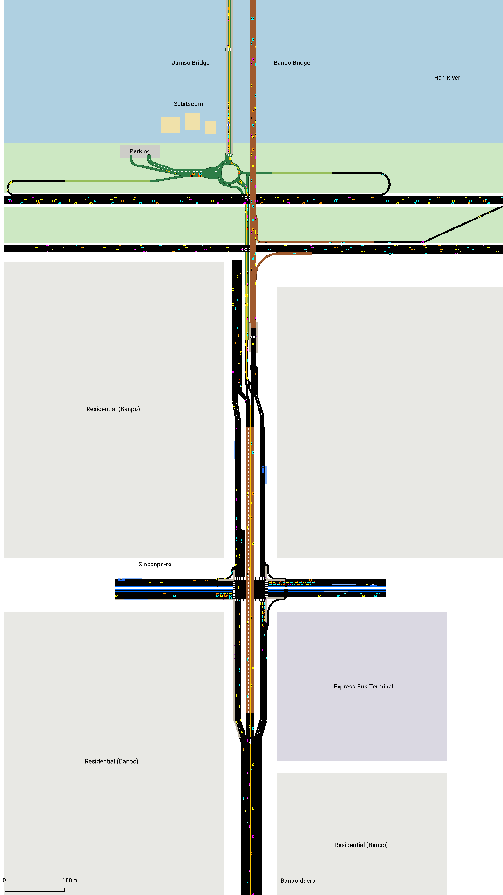
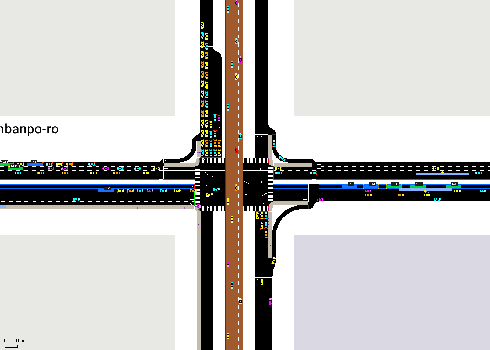
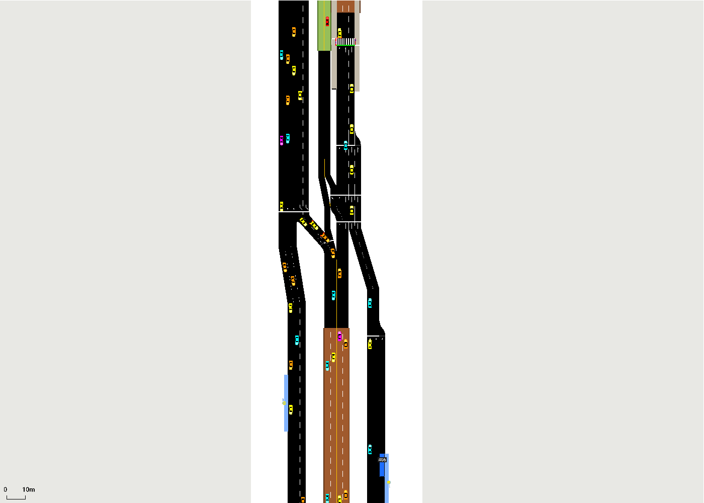
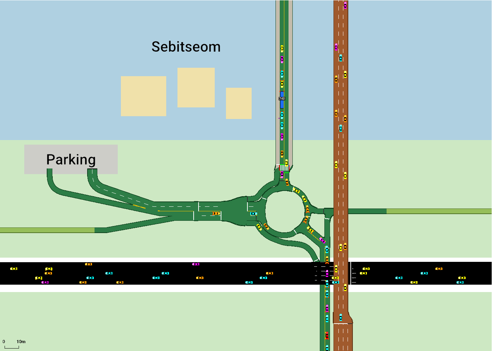

01왜 이 도로인가
도로 모양은 그대로, 수요만 바뀐 실제 정책 변화 — 같은 AV를 두 교통 상황에서 비교할 수 있다.

실제 정책 변화가 만든 실험
2026-10-26부터 잠수교 다리만 차량이 통제됐다. 지하차도 · 회전교차로 · 루프 · 주차장은 그대로 통행한다. 도로는 거의 같고 수요가 바뀐다. 통제 후 반포대교 북행 실측 교통량은 +4% — 잠수교 교통의 약 22%만 반포대교로 옮겨 왔다.
위에서 보면 한 점, 실제로는 3층 입체 접속부
고가 · 지상 · 지하가 겹쳐 있고, 반포대교 직전 약 300 m 안에 합류 → 왼쪽 분기 → 차로 감소 → 오른쪽 분기 → 합류가 연달아 나온다.
멀리 앞서 내려야 하는 결정
잠수교 지하차도는 합류 직후 고가 쪽 왼쪽 차로에서만 갈라진다. 잠수교로 가려면 580 m 앞 고가 · 측도 분기에서 고가를, 그것도 왼쪽 차로를 골라야 한다.
02도로 구조
구간 길이 · 램프 길이 · 차로 수는 실제 값(OpenStreetMap · 로드뷰 확인), 모양은 직선과 원호로 단순화. 수업이 요구한 구조 모듈이 거의 다 들어 있다.
| 모듈 | 위치 | 생기는 상호작용 |
|---|---|---|
| 분기 | 고가 · 측도 분기 (반포대로 6차로 → 고가 2 · 측도 4) | 목적지에 맞는 길 · 차로를 580 m 앞에서 선택 |
| 신호 사거리 | 신반포사거리 (강남터미널고가 밑, 중앙 버스전용차로) | 신호 정지 · 진행, 직진 vs 좌회전, 버스, 보행자 |
| 합류 + 차로 감소 | 고가 2 + 측도 2 → 4 → 3 | 합류 타이밍, 차로 끝 앞 양보 |
| 왼쪽 · 오른쪽 분기 | ① 잠수교 지하차도 · ② 올림픽대로 하남 방향 | 반대 방향 차로 변경이 엇갈림, 분기 놓침 = 경로 이탈 |
| 램프 합류 | ③ 올림픽대로 김포 방향 → 반포대교 상층 | 램프 차량 vs 본선 (보행화 후 수요가 몰리는 곳) |
| 회전교차로 | 잠수교 남단 (반시계 1차로, 4방향) + 우회로 3개 | 회전 중 차량에 양보 후 진입 |
| 엮임 (weaving) | 올림픽대로 김포 방향 260 m (루프 합류 → 주차장 진출) | 엇갈리는 차로 변경 |
| 버스전용 · 정류소 | 신반포로 중앙 버스전용차로, 정류소 6곳 | 정차 버스 피하기 |





03교통
수요 · 신호 · 버스 모두 실측 자료. 원자료와 계산은 environment/road/measured.
수요
평일 11~15시 평균. 통제 전 TOPIS 교통량조사, 통제 후 t-data 실측. 예: 반포대로 북행 2,181 → 2,233대/시, 올림픽대로 김포 방향 6,937 → 7,190대/시.
신호 5곳
C-ITS 신호제어기 기록(1초 간격)을 통제 전 10/21 · 후 11/11 평일로 분석. 신반포사거리 · 북행 횡단보도 · 반포대교남단은 주기 170초 연동, 잠수교 2곳은 75초(통제 후 점멸).
버스 34개 노선 · 보행자
범위 안 정류소 6곳을 지나는 노선을 공식 자료로 모두 찾아 배차 간격 · 정차 그대로. 740 · 405번은 통제 후 반포대교로 우회. 횡단보도 7곳 보행자.
시나리오와 AV 경로
도로망은 하나. 통제 전 · 후는 수요, 버스 경로, 잠수교 통행 여부만 다르다. AV는 반포대로 · 올림픽대로 · 신반포로에서 출발해 반포대교나 잠수교로 강북에 건너간다. 출발 차로는 무작위.
| 경로 | 시나리오 | 길 |
|---|---|---|
goga-jamsu | 통제 전 | 고가 왼쪽 차로 → ① 지하차도 → 회전교차로 → 잠수교 |
oly-jamsu | 통제 전 | 올림픽대로 → 회전교차로 → 잠수교 |
side-banpo | 통제 후 | 측도 → 신반포사거리(신호) → 합류 → ② · ③ → 반포대교 |
goga-banpo | 통제 후 | 고가 직진 → 합류 → ③ 램프 합류 → 반포대교 |
sbr-banpo | 통제 후 | 신반포로 → 사거리 우회전 도로 → 합류 → ③ → 반포대교 |
04자율주행차: 관측 · 행동 · 보상 · 학습
출발 차로를 무작위로 두고, 차로 선택까지 정책이 직접 한다.
관측 49차원
수업 기본 31 + 경로 4(분기 2개의 방향 · 거리) + 내 차로 진행 방향 4 + 신호 3(색 · 정지선 거리 · 남은 시간) + 경합 차량 4 + 차로 제한속도 3.
행동
가감속과 차로 변경(왼쪽 · 유지 · 오른쪽). 안전장치(강제 제동)는 쓰지 않는다.
보상 · 종료
차로 제한속도 대비 속도 보상, 도착 보너스. 충돌 · 신호 위반 · 120초 비정상 정지는 종료와 큰 벌점, 앞차와 충돌까지 2초 안이면 접근 감점. 적색 대기는 정지 시간에서 뺀다.
학습 순서
- 선생님 규칙 정책 — 차로 변경 · 신호 대비 · 틈 만들기를 하는 규칙 정책으로 시범 데이터의 정답을 만든다.
- BC + DAgger — 시범으로 행동 복제, 흔들림 DAgger로 정책이 스스로 간 상태에도 정답을 붙인다. 드문 감속 스텝에 가중치를 줘 BC 중 최선(r8b4n)을 얻었다.
- 선생님 보정 PPO — 그냥 이어 학습한 PPO는 감속을 풀어 충돌이 늘었다. PPO 업데이트마다 rollout 관측에 선생님 정답으로 BC를 한 번 더 해 감속을 붙잡았고, 이 모델(U5, 26.2만 스텝)이 BC를 처음 넘었다.
- 확정 — 학습에 쓰지 않은 새 시드 3,000판으로 평가 (마지막 1,000판은 모델 비교에도 쓰지 않음). 선생님과 같은 시드로 비교해도 도착 차이가 약 0.4%p라 모델 개선을 닫았다.
05결과
최종 모델 results/team_rl_1120_U5/model_261632.pt · 무작위 출발 차로 · 새 시드 3,000판 (5개 경로 × 600판)
06주행 영상
최종 모델, 경로마다 가장 어려운 출발 차로에서 상호작용이 많은 판 — 모두 도착 장면까지.
goga-jamsu ep22 · 출발 0번 차로 · 77초oly-jamsu ep41 · 출발 2번 차로 · 75초side-banpo ep32 · 출발 5번 차로 · 97초goga-banpo ep16 · 출발 0번 차로 · 43초sbr-banpo ep8 · 출발 1번 차로 · 39초07데이터셋
최종 모델이 두 시나리오 · 5개 경로를 달린 주행 기록. Hugging Face에서 받기
08실행법
Python 3.14 (3.11에서도 동작) · SUMO 1.27. 저장소 루트에서 실행한다. 자세한 것은 README.
git clone https://github.com/skku-aicad-2026-team12/banpo-av.git
cd banpo-av
python -m pip install -r requirements.txt
# 도로망 생성 + 검증
python -X utf8 environment/road/build_net.py
python -X utf8 environment/road/check_net.py # 마지막 줄 "결과: 통과"
# 최종 모델 평가 (5개 경로 × 200판)
python -X utf8 evaluation/baseline.py --model results/team_rl_1120_U5/model_261632.pt \
--episode-start 600 --episodes 200 --depart-lane random --depart-speed limit --safety off --name final_U5
# 데이터 수집
python -X utf8 data_collection/collect_pomdp_data.py --model results/team_rl_1120_U5/model_261632.pt \
--safety off --depart-lane random --depart-speed limit --episodes 10 --out-dir data/demo --name demo